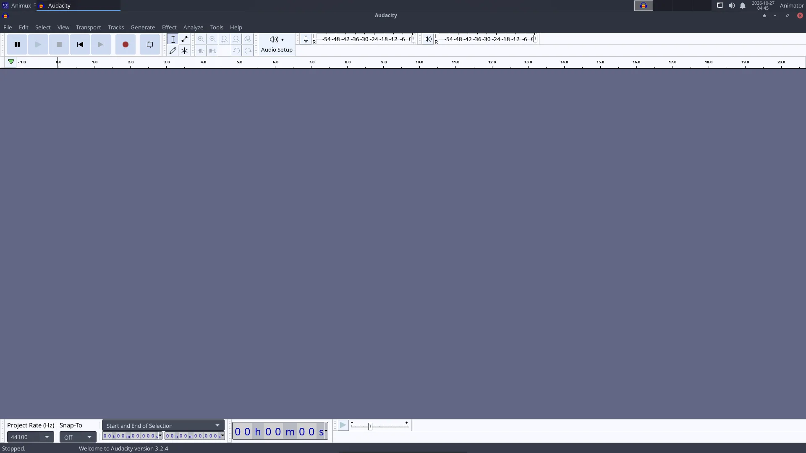
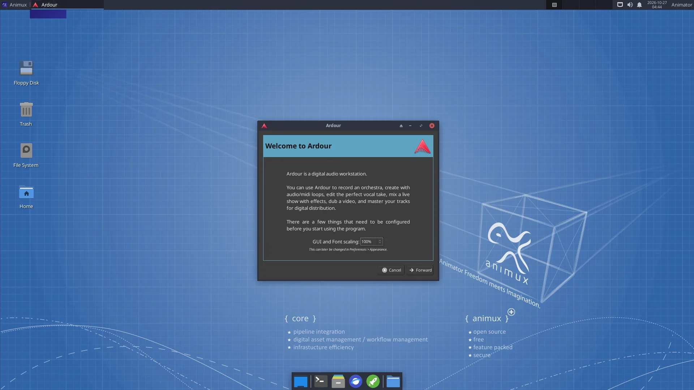
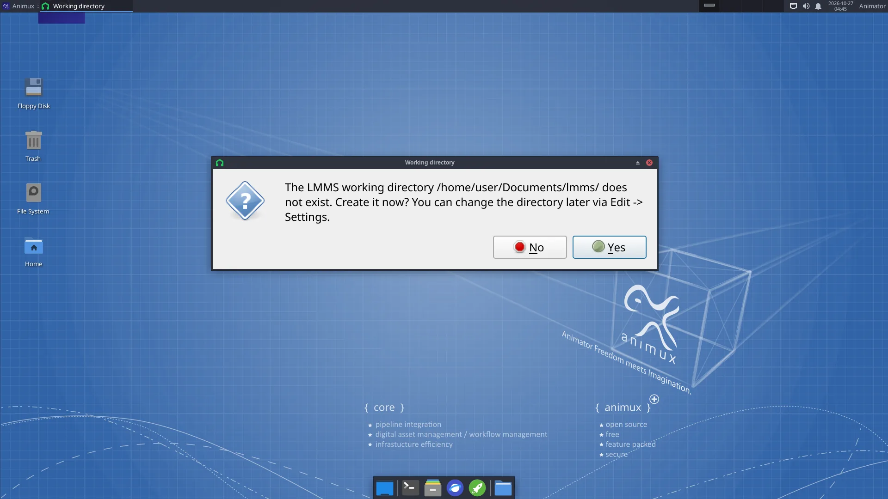

| Program | Use it to | Start |
|---|---|---|
| Audacity 3.2 | record and clean up dialogue and sound effects (easiest) | audacity |
| Ardour 7.3 | record and mix many tracks, the full soundtrack of a film, with effects and automation | ardour |
| LMMS 1.2 | compose music with built-in synthesizers, beats and samples | lmms |
| Hydrogen 1.2 | program drum rhythms | hydrogen |
| MuseScore 3 | write sheet music and play it back | mscore3 |
| Rosegarden | MIDI sequencing and scoring | rosegarden |
| ZynAddSubFX, Yoshimi, Qsynth, Guitarix, VMPK | software instruments, guitar amp, on-screen keyboard | menu |
| Sonic Visualiser, Praat | look at sound; Praat analyses speech (useful for lip sync timing) | menu |
| SoundConverter, SoX | convert sound files | soundconverter, sox |
All are in Sound Engineering.
Audacity: record a voice-over#


- Plug in a microphone (a USB microphone or headset is easiest). Choose it in the microphone list on the toolbar.
- Click the red Record button, speak, click Stop.
- Clean it: select a quiet part → Effect → Noise Removal and Repair → Noise Reduction → Get Noise Profile; select everything (Ctrl+A) → Noise Reduction → OK. Then Effect → Volume and Compression → Normalize.
- File → Export → Export as WAV (best for editing) or MP3.
Ardour: mix the soundtrack#


When Ardour starts it asks for a session (project) and the audio system: choose JACK/PipeWire or ALSA (see below). Add tracks with Track → Add Track, Bus or VCA, import the dialogue, music and effects with Session → Import, and set levels in the Mixer window (Alt+M). Session → Export → Export to Audio File(s) writes the final mix.
To line up sound with picture inside Ardour, Session → Open Video needs the extra programs harvid and xjadeo, which are not included. The easier way: edit the final mix against the picture in Kdenlive.
LMMS and Hydrogen: make music#


In LMMS, drag an instrument (for example TripleOscillator) from the left into the Song Editor, double-click its pattern to open the Piano Roll and draw notes. The Beat+Bassline Editor is for drum patterns. File → Export writes WAV or OGG.
In Hydrogen, click squares in the pattern grid to place drum hits; chain patterns in the song editor.
How audio works on Animux#
Animux uses PipeWire, which plays the roles of PulseAudio (normal desktop sound) and JACK (professional low-latency audio) at once. Normally you do nothing.
- Volume and devices: the speaker icon on the panel, and PulseAudio Volume Control (Sound Engineering → Sound Server Configuration): choose the output (speakers, HDMI, headphones) and input (microphone) on the Output Devices, Input Devices and Configuration tabs.
- JACK programs (Ardour, Hydrogen, Qsynth…) connect to PipeWire's JACK service automatically. If a program cannot find JACK, start it with
pw-jack, for examplepw-jack hydrogen. - QjackCtl shows and changes connections between audio programs (the Graph button).
Crackling sound while recording
Close other programs. In Ardour choose a larger buffer size (512 or 1024 samples). In a virtual machine audio is often unreliable; record on a real computer if you can.
Sound for animation: tips#
- Record dialogue before animating, then animate to it (lip sync). Import the WAV in Blender's timeline (Add → Sound in the Video Sequencer) or in Pencil2D's sound layer.
- Use 48 kHz WAV files throughout; it is the film and video standard.
- Free sound effects and music: https://freesound.org/, https://opengameart.org/, https://freemusicarchive.org/. Check each licence.